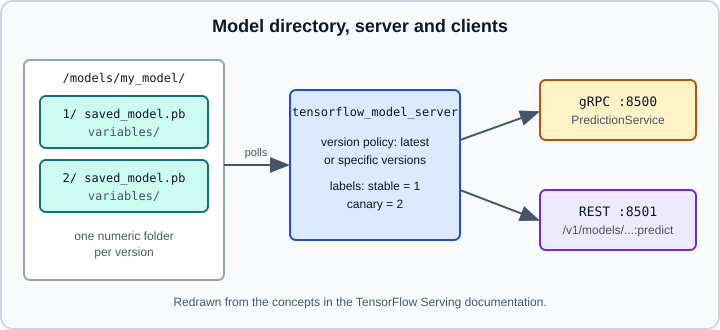

Serving with TensorFlow Serving
|
This content was generated with the assistance of AI and should be verified against the official documentation before being relied on in production. |
TensorFlow Serving is the production model server of the TensorFlow ecosystem. It loads SavedModels from a directory, watches that directory for new numbered versions, and exposes every model through a gRPC API and a REST API, with optional request batching. This page covers exporting a Keras 3 model into the layout the server expects, running the official Docker image, calling both APIs, serving several models and versions, and inspecting signatures with saved_model_cli. The export step itself is detailed on Saving Keras Models and SavedModel and Signatures; for phones and browsers see On-Device Inference with LiteRT and TF.js, TFX and TF Probability.
It targets Python 3.13, TensorFlow 2.21 with Keras 3.15 (TensorFlow 2.22 is "upcoming" and not covered), and was checked against the official TensorFlow Serving documentation on 2026-10-30. The export and saved_model_cli examples were run on Python 3.13 with TensorFlow 2.21 and Keras 3.15 (CPU) on 2026-10-31. The Docker commands and the REST and gRPC clients need a running TensorFlow Serving container and were not executed; their outputs in comments are what the documentation describes. The framework-neutral view (batching, canary releases, ONNX Runtime, Triton, cost) is on Deploying and Serving Models, and wrapping a model in your own Python web service is on Serving Data Science and AI with FastAPI.
Where it fits
TensorFlow Serving is a good fit when you want a ready-made, high-throughput server with built-in model versioning and batching, and the model is a TensorFlow SavedModel. It is a poor fit when you need custom pre- or post-processing in Python on every request (put that in the model graph, in a Keras preprocessing layer, or in a thin gateway service), or when the model is not a SavedModel (use ONNX Runtime or a Python server such as FastAPI instead).
Exporting a model into the expected layout
The server expects a base path per model, and inside it one numeric sub-directory per version. Each version directory is a SavedModel (saved_model.pb plus variables/). The server serves the highest version number by default, so use a larger integer for every new version.
import keras
import numpy as np
keras.utils.set_random_seed(0)
model = keras.Sequential([
keras.Input(shape=(4,), name="features"),
keras.layers.Dense(16, activation="relu"),
keras.layers.Dense(1),
])
model.compile(optimizer="adam", loss="mse")
x = np.random.rand(256, 4).astype("float32")
y = x.sum(axis=1, keepdims=True)
model.fit(x, y, epochs=3, verbose=0)
# models/my_model/1/saved_model.pb and models/my_model/1/variables/
model.export("models/my_model/1", format="tf_saved_model")Points to know about Model.export() in Keras 3:
-
"tf_saved_model"is the defaultformat. Export works with the TensorFlow, JAX and PyTorch backends; a model trained on the JAX backend can still be exported as a SavedModel when TensorFlow is installed. -
export()writes an inference artifact, not a training checkpoint. It is different frommodel.save("m.keras"), which stores the full model for reloading in Keras (see Saving Keras Models). TensorFlow Serving cannot read a.kerasfile. -
The exported artifact exposes a
serveendpoint and aserving_defaultsignature. If your inputs have unusual shapes or dtypes, passinput_signature=so the signature is explicit, for example a list holding akeras.InputSpecwithshape=(None, 4). -
Older books export with
tf.saved_model.builder.SavedModelBuilderand TF1 sessions, or callmodel.save("dir")to get a SavedModel. Neither is the recommended path in Keras 3; useexport(), ortf.saved_model.savefor atf.Module(see Modules).
Inspecting signatures with saved_model_cli
saved_model_cli ships with the TensorFlow pip package. Use it before deploying to learn the input names the server will expect, and to try the model locally.
# List every signature with input and output names, dtypes and shapes
saved_model_cli show --dir models/my_model/1 --all
# Only the serving signature
saved_model_cli show --dir models/my_model/1 --tag_set serve --signature_def serving_default
# Run the signature on a Python literal, without any server
saved_model_cli run --dir models/my_model/1 --tag_set serve \
--signature_def serving_default \
--input_exprs 'features=[[1.0, 1.0, 1.0, 1.0], [0.1, 0.2, 0.3, 0.4]]'
# Result for output key output_0:
# [[...]
# [...]]In TensorFlow 2.21 --input_exprs accepts only Python literals. Older examples that pass NumPy expressions such as np.ones2, 4 now fail with RuntimeError: Expression "np.ones((2, 4), dtype=np.float32)" is not a valid python literal. For the model above, show lists one input, features (DT_FLOAT, shape (-1, 4)), and one output, output_0 (DT_FLOAT, shape (-1, 1)).
The names printed by show are the keys you use in gRPC requests and in the columnar REST format. Keras derives them from the layer and input names, which is why naming the keras.Input (name="features" above) makes the contract stable between retrainings. If you do not name it, the generated name can change between runs and break clients. If saved_model_cli shows a different input key than you expected, trust the CLI output over any example in a book.
Running the Docker image
The official image is tensorflow/serving, with a GPU variant tagged latest-gpu. It runs tensorflow_model_server with the REST port 8501 and the gRPC port 8500, and reads the model from $MODEL_BASE_PATH/$MODEL_NAME, where MODEL_BASE_PATH defaults to /models and MODEL_NAME defaults to model.
docker pull tensorflow/serving
docker run --rm -p 8500:8500 -p 8501:8501 \
--mount type=bind,source="$(pwd)/models/my_model",target=/models/my_model \
-e MODEL_NAME=my_model \
-t tensorflow/servingPractical notes:
-
Mount the model directory (the one that contains
1/,2/, …), not the version directory. A server that starts and then reports no versions found almost always has the wrong mount level. -
Either port can be published alone. Publish only what clients use, and keep both off the public internet: TensorFlow Serving has no built-in authentication, so put a reverse proxy, service mesh or API gateway in front.
-
The GPU image is run with
--gpus alland needs a working NVIDIA driver and container runtime on the host. The official page still mentions the oldernvidia-dockerwrapper; current setups normally use the NVIDIA Container Toolkit instead. -
To ship a self-contained image, copy the model into a container started from
tensorflow/serving, commit it with theMODEL_NAMEenvironment variable set, and push it to your registry. Baking the model in makes rollbacks a matter of choosing an image tag, at the price of rebuilding for every model change. -
Extra flags after the image name go to
tensorflow_model_server, for example--model_config_file=...or--enable_batching.
Calling the REST API
REST requests go to http://host:8501/v1/models/<name>;, optionally with /versions/<n> or /labels/<label>, followed by :predict, :classify or :regress. Status and metadata are GET requests on the model URL and on its /metadata path.
# Is the model loaded, and which versions?
curl http://localhost:8501/v1/models/my_model
# The signatures the server found (useful to confirm input names)
curl http://localhost:8501/v1/models/my_model/metadata
# Row format: one entry per example
curl -X POST http://localhost:8501/v1/models/my_model:predict \
-d '{"instances": [[0.1, 0.2, 0.3, 0.4], [1.0, 1.0, 1.0, 1.0]]}'
# {"predictions": [[...], [...]]}The predict body uses either instances (row format, one object or tensor per example) or inputs (columnar format, one entry per named input), never both. A row request returns predictions, a columnar request returns outputs. Binary data such as image bytes is Base64 encoded and wrapped as an object with a single b64 key; output tensors whose names end in _bytes come back in the same wrapper. Errors are returned as a JSON object with an error message.
A Python client for the REST API needs only requests:
import numpy as np
import requests
x = np.random.rand(3, 4).astype("float32")
resp = requests.post(
"http://localhost:8501/v1/models/my_model:predict",
json={"instances": x.tolist()},
timeout=5,
)
resp.raise_for_status()
preds = np.array(resp.json()["predictions"], dtype="float32")
print(preds.shape) # (3, 1)JSON has only one number type, so a value can lose precision when it is turned into a 32-bit float on the server (an integer id such as 1435774380 becomes 1435774336). Send large identifiers as strings or 64-bit tensors, and for big payloads or low latency prefer gRPC.
Calling the gRPC API
gRPC listens on port 8500 and is usually faster for large tensors because it avoids JSON text. The tensorflow-serving-api pip package contains the generated stubs.
import grpc
import numpy as np
import tensorflow as tf
from tensorflow_serving.apis import predict_pb2, prediction_service_pb2_grpc
channel = grpc.insecure_channel("localhost:8500")
stub = prediction_service_pb2_grpc.PredictionServiceStub(channel)
request = predict_pb2.PredictRequest()
request.model_spec.name = "my_model"
request.model_spec.signature_name = "serving_default"
# optional: request.model_spec.version.value = 1 or version_label = "stable"
x = np.random.rand(3, 4).astype("float32")
request.inputs["features"].CopyFrom(tf.make_tensor_proto(x))
response = stub.Predict(request, timeout=5.0)
out = tf.make_ndarray(response.outputs[next(iter(response.outputs))])
print(out.shape)Source: https://www.tensorflow.org/tfx/serving/api_rest and https://www.tensorflow.org/tfx/serving/serving_basic
Notes: the key features must match the input name printed by saved_model_cli; the output key depends on the model (output_0 for the exported model above), so the snippet takes the first one. The tensorflow-serving-api package depends on TensorFlow, so a lean client can instead generate stubs from the .proto files, which avoids installing the whole framework in a gateway service. Always set a timeout on the call.
pip install tensorflow-serving-api # pin it to your serving image's TensorFlow minor versionSeveral models, versions and labels
For more than one model, or to control which versions are live, pass a model config file (a ModelServerConfig protocol buffer in text form).
model_config_list {
config {
name: 'my_model'
base_path: '/models/my_model'
model_platform: 'tensorflow'
model_version_policy {
specific {
versions: 1
versions: 2
}
}
version_labels { key: 'stable' value: 1 }
version_labels { key: 'canary' value: 2 }
}
config {
name: 'other_model'
base_path: '/models/other_model'
model_platform: 'tensorflow'
}
}docker run --rm -p 8500:8500 -p 8501:8501 \
-v "$(pwd)/models:/models" \
tensorflow/serving \
--model_config_file=/models/models.config \
--model_config_file_poll_wait_seconds=60How versions behave:
-
With no policy the server serves the version with the largest number and, because it polls the base path, picks up a newly copied-in higher version automatically (the poll interval is
--file_system_poll_wait_seconds). Copy a version in completely and then rename it into place; a half-copied directory can be loaded in a broken state. -
specificserves exactly the listed versions, which is how you pin a rollback target or run a canary next to the stable version. The documentation describes the default andspecific; check the proto for other options such as serving all versions before depending on them. -
Version labels are aliases such as
stableandcanary. Clients call/v1/models/my_model/labels/stable:predict(REST) or set the label inmodel_spec(gRPC), so promotion is a config change rather than a client change. A label can normally point only to a version that is already loaded, unless--allow_version_labels_for_unavailable_models=trueis set. To move a label, first load a config with both versions, then submit one where the label points to the new version. -
When the config file is reloaded the server makes its state match it, so models missing from the new file are unloaded.
Batching
Serving one request at a time wastes GPU capacity. Server-side batching groups concurrent requests into one forward pass.
docker run --rm -p 8501:8501 -v "$(pwd)/models:/models" tensorflow/serving \
--model_config_file=/models/models.config \
--enable_batching=true \
--batching_parameters_file=/models/batching.configmax_batch_size { value: 128 }
batch_timeout_micros { value: 1000 }
max_enqueued_batches { value: 1000000 }
num_batch_threads { value: 8 }batch_timeout_micros is the latency you trade for throughput: the server waits at most that long to fill a batch. Batching is configured globally for the server, not per model. Tune the values with a load test (see Performance, XLA and Profiling); the general trade-off is the same as on Deploying and Serving Models.
Design advice and pitfalls
-
Put preprocessing that must match training inside the exported model (Keras preprocessing layers such as
Rescaling,NormalizationorTextVectorization, see Keras Preprocessing Layers). Then clients send raw data and training and serving cannot drift apart. -
Dynamic batch dimensions: leave the first dimension as
Noneso one SavedModel handles any batch size. A fixed batch size forces clients to pad. -
Warm up large models. The first request after a load can be slow while kernels are compiled; TensorFlow Serving supports warmup request files stored in the version directory, described in its advanced documentation.
-
Match the serving image and training environment. A model exported by TensorFlow 2.21 may use ops that an old
tensorflow/servingtag does not know; pin the image tag instead of usinglatest, and read the release notes of https://github.com/tensorflow/serving/releases before upgrading. Check the release notes for the TensorFlow version each server release is built with. -
The page
serving_basicon tensorflow.org still shows the TF1SavedModelBuilderAPI and a 2021 date. Treat its directory layout and Docker command as valid and its Python export code as outdated. -
Security: the server is unauthenticated and its model directory is trusted code (SavedModels can contain custom ops and arbitrary graph computation). Serve only models you produced or reviewed, and isolate the container.
-
If you need Python business logic per request, run a FastAPI service in front (see Serving Data Science and AI with FastAPI) that calls TensorFlow Serving over gRPC, or load the SavedModel directly in the service and give up server-side batching and versioning.
Alternatives
| Option | Use it when | Trade-off |
|---|---|---|
TensorFlow Serving |
You serve TensorFlow SavedModels at scale and want versions and batching built in |
SavedModel only; unauthenticated; configuration through proto text |
FastAPI plus |
You need custom Python logic per request or a small deployment |
You build batching, versioning and health checks yourself |
ONNX Runtime or Triton |
You serve several frameworks or need a vendor-neutral format |
Conversion step and op coverage, see ONNX and Interoperability |
LiteRT |
The model runs on a phone or embedded device |

References
-
TensorFlow Serving with Docker: https://www.tensorflow.org/tfx/serving/docker
-
Serving a TensorFlow model (export layout, older API): https://www.tensorflow.org/tfx/serving/serving_basic
-
Advanced model server configuration (config file, labels, batching): https://www.tensorflow.org/tfx/serving/serving_config
-
Client REST API: https://www.tensorflow.org/tfx/serving/api_rest
-
Serving guide: https://www.tensorflow.org/tfx/guide/serving
-
TensorFlow Serving releases: https://github.com/tensorflow/serving/releases
-
SavedModel guide (
saved_model_cli): https://www.tensorflow.org/guide/saved_model -
Keras
Model.export(): https://keras.io/api/models/model_saving_apis/export/